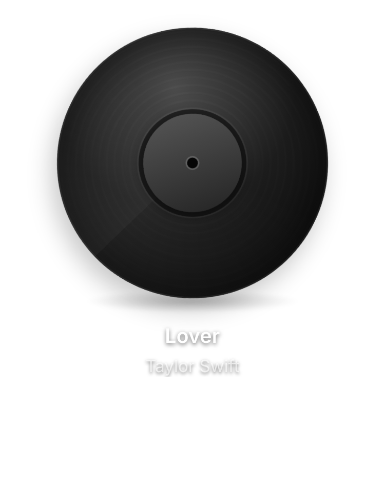
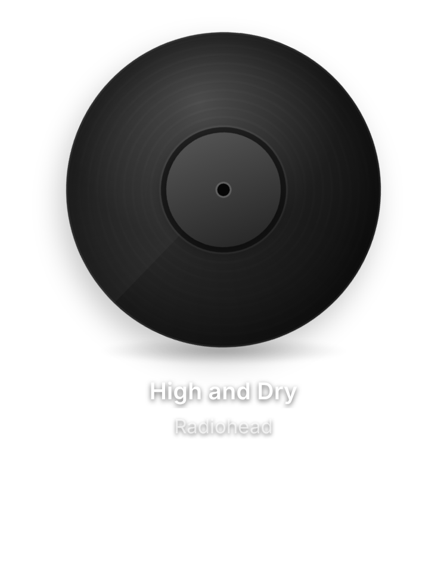
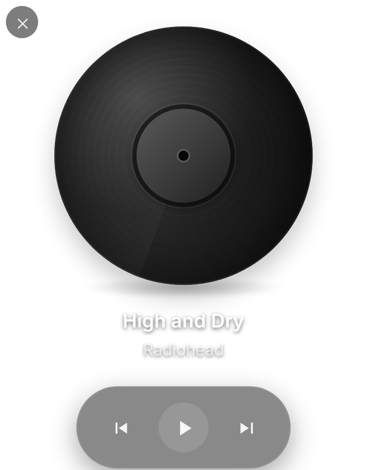

One widget for all your sound.
Vinylnyl shows whatever is playing as a spinning record, above every app.

Works with what you already play.
Vinylnyl reads the media controls your system already has. YouTube, YouTube Music, Spotify and more show up without an extension.
| System | How it reads | You install |
|---|---|---|
| Windows | The system media controls, any player. | Nothing else |
| Linux | MPRIS, any player. | playerctl |
| macOS | Talks to Safari and Chrome-based browsers directly.
| One browser setting |
| Extension | Optional. Adds Firefox and sharper track info. | A browser extension |
You always know what’s playing.
See the title, artist and art the second a track starts, or take full control without leaving your desktop.
Play a song
Open the app, then play something in your browser or player. The record picks it up.

Vinylnyl syncs automatically
The track is detected with its title, artist and album art. Change the song and the record follows.

Control from your desktop
Previous, play and pause, next. No tab switching.

Built to feel like a real record.
Every detail, from the spinning label to the tonearm-free disc, is tuned for the vibe, not just the function.
- Real vinyl animation
- A continuously spinning disc, grooves and all, not a static thumbnail.
- Any player, any OS
- Works with whatever is playing: YouTube, YouTube Music, Spotify and more, on Mac, Windows and Linux.
- Always on top
- A frameless floating window above every app and every space. Its position is saved and restored on launch.
- Full playback control
- Previous, play and pause, and next, right on the record.
- Menu bar tray
- Show, hide, reset its position or quit from the menu bar.
Completely free, forever.
A real desktop record player you can’t find anywhere else, and everything stays on your own computer.
- Price
- Free
- Account
- None. No login screen: open the app and it just works.
- Cloud
- None. No server, zero cloud dependency.The extension only talks to the app on 127.0.0.1
Download Vinylnyl
Free for macOS, Windows and Linux.
macOS 12+ (Apple Silicon and Intel), Windows 10+, Linux (AppImage)
Setup: just open the app
Windows: nothing else to install. Play something and the widget picks it up.
macOS: works with Safari and Chrome-based browsers once you turn on “Allow JavaScript from Apple Events” in the browser’s Develop menu (see the README).
Linux: install playerctl, for example sudo apt install playerctl.
Optional: browser extension (Firefox, sharper info)
The extension also covers Firefox and any case the system media controls miss. Download vinylnyl-extension.zip, unzip it, open chrome://extensions (or edge://, brave://), turn on Developer mode and click Load unpacked.
On Firefox use the Firefox build with about:debugging, then Load Temporary Add-on.
Seeing an “unidentified developer” or SmartScreen warning?
Vinylnyl isn’t code-signed yet, so your OS may warn you the first time you open it.
macOS: open the app once, then go to System Settings, Privacy & Security and click “Open Anyway”, or run xattr -cr /Applications/Vinylnyl.app in Terminal.
Windows: click More info, then Run anyway.